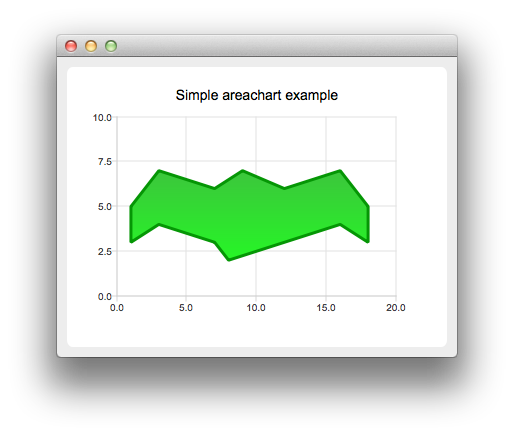

QAreaSeries Class
The QAreaSeries class presents data in area charts. More...
| Header: | #include <QAreaSeries> |
| Instantiated By: | AreaSeries |
| Inherits: | QAbstractSeries |
Properties
|
|
Public Functions
| QAreaSeries(QObject *parent = nullptr) | |
| QAreaSeries(QLineSeries *upperSeries, QLineSeries *lowerSeries = nullptr) | |
| virtual | ~QAreaSeries() |
| QColor | borderColor() const |
| QBrush | brush() const |
| QColor | color() const |
| QLineSeries * | lowerSeries() const |
| QPen | pen() const |
| bool | pointLabelsClipping() const |
| QColor | pointLabelsColor() const |
| QFont | pointLabelsFont() const |
| QString | pointLabelsFormat() const |
| bool | pointLabelsVisible() const |
| bool | pointsVisible() const |
| void | setBorderColor(const QColor &color) |
| void | setBrush(const QBrush &brush) |
| void | setColor(const QColor &color) |
| void | setLowerSeries(QLineSeries *series) |
| void | setPen(const QPen &pen) |
| void | setPointLabelsClipping(bool enabled = true) |
| void | setPointLabelsColor(const QColor &color) |
| void | setPointLabelsFont(const QFont &font) |
| void | setPointLabelsFormat(const QString &format) |
| void | setPointLabelsVisible(bool visible = true) |
| void | setPointsVisible(bool visible = true) |
| void | setUpperSeries(QLineSeries *series) |
| QLineSeries * | upperSeries() const |
Reimplemented Public Functions
| virtual QAbstractSeries::SeriesType | type() const override |
Signals
| void | borderColorChanged(QColor color) |
| void | clicked(const QPointF &point) |
| void | colorChanged(QColor color) |
| void | doubleClicked(const QPointF &point) |
| void | hovered(const QPointF &point, bool state) |
| void | pointLabelsClippingChanged(bool clipping) |
| void | pointLabelsColorChanged(const QColor &color) |
| void | pointLabelsFontChanged(const QFont &font) |
| void | pointLabelsFormatChanged(const QString &format) |
| void | pointLabelsVisibilityChanged(bool visible) |
| void | pressed(const QPointF &point) |
| void | released(const QPointF &point) |
Detailed Description
An area series is used to show quantitative data. It is based on a line series, in the way that the area between the boundary lines is emphasized with color. Since the area series is based on the line series, the QAreaSeries constructor needs a QLineSeries instance, which defines the upper boundary of the area. The area chart is drawn using the bottom of the plot area as the lower boundary by default. Instead of the bottom of the plot area, the lower boundary can be specified by another line. In that case, QAreaSeries should be initialized with two QLineSeries instances.
Note: The terms upper and lower boundary can be misleading in cases where the value of the lower boundary is greater than that of the upper boundary. The main point is that the area between these two boundary lines will be filled.
See the Charts with Widgets Gallery to learn how to create a simple area chart.

Property Documentation
borderColor : QColor
This property holds the line (pen) color of the series. This is a convenience property for modifying the color of the pen.
Access functions:
| QColor | borderColor() const |
| void | setBorderColor(const QColor &color) |
Notifier signal:
| void | borderColorChanged(QColor color) |
See also QAreaSeries::pen().
color : QColor
This property holds the fill (brush) color of the series. This is a convenience property for modifying the color of the brush.
Access functions:
| QColor | color() const |
| void | setColor(const QColor &color) |
Notifier signal:
| void | colorChanged(QColor color) |
See also QAreaSeries::brush().
[read-only] lowerSeries : QLineSeries* const
This property holds the lower one of the two line series used to define area series boundaries.
Note: If QAreaSeries was constructed without a lowerSeries, this is null.
Access functions:
| QLineSeries * | lowerSeries() const |
pointLabelsClipping : bool
This property holds the clipping for data point labels. True by default. The labels on the edge of the plot area are cut when clipping is enabled.
Access functions:
| bool | pointLabelsClipping() const |
| void | setPointLabelsClipping(bool enabled = true) |
Notifier signal:
| void | pointLabelsClippingChanged(bool clipping) |
See also pointLabelsVisible.
pointLabelsColor : QColor
This property holds the color used for data point labels. By default, the color is the color of the brush defined for labels in the theme.
Access functions:
| QColor | pointLabelsColor() const |
| void | setPointLabelsColor(const QColor &color) |
Notifier signal:
| void | pointLabelsColorChanged(const QColor &color) |
See also QAreaSeries::pointLabelsFormat.
pointLabelsFont : QFont
This property holds the font used for data point labels.
Access functions:
| QFont | pointLabelsFont() const |
| void | setPointLabelsFont(const QFont &font) |
Notifier signal:
| void | pointLabelsFontChanged(const QFont &font) |
See also QAreaSeries::pointLabelsFormat.
pointLabelsFormat : QString
This property holds the format used for showing labels with series points.
QAreaSeries supports the following format tags:
| @xPoint | The x value of the data point |
| @yPoint | The y value of the data point |
For example, the following usage of the format tags would produce labels that have the data point (x, y) shown inside brackets separated by a comma:
series->setPointLabelsFormat("(@xPoint, @yPoint)");
By default, the label format is set to @xPoint, @yPoint. The labels are shown on the plot area, whereas labels on the edge of the plot area are cut. If the points are close to each other, the labels may overlap.
Access functions:
| QString | pointLabelsFormat() const |
| void | setPointLabelsFormat(const QString &format) |
Notifier signal:
| void | pointLabelsFormatChanged(const QString &format) |
See also QAreaSeries::pointLabelsVisible, QAreaSeries::pointLabelsFont, and QAreaSeries::pointLabelsColor.
pointLabelsVisible : bool
This property holds the visibility of data point labels. False by default.
Access functions:
| bool | pointLabelsVisible() const |
| void | setPointLabelsVisible(bool visible = true) |
Notifier signal:
| void | pointLabelsVisibilityChanged(bool visible) |
See also QAreaSeries::pointLabelsFormat and QAreaSeries::pointLabelsClipping.
[read-only] upperSeries : QLineSeries* const
This property holds the upper one of the two line series used to define area series boundaries.
Access functions:
| QLineSeries * | upperSeries() const |
Member Function Documentation
[explicit] QAreaSeries::QAreaSeries(QObject *parent = nullptr)
Constructs an area series object without an upper or a lower series with the parent object.
[explicit] QAreaSeries::QAreaSeries(QLineSeries *upperSeries, QLineSeries *lowerSeries = nullptr)
Constructs an area series object that will be spanned between an upperSeries line and a lowerSeries line. If no lowerSeries is passed to the constructor, the x-axis is used as the lower bound instead.
The QAreaSeries does not own the upper or lower series, but the ownership stays with the caller. When the series object is added to QChartView or QChart, the instance ownership is transferred.
[virtual noexcept] QAreaSeries::~QAreaSeries()
Destroys the object.
[signal] void QAreaSeries::borderColorChanged(QColor color)
This signal is emitted when the line (pen) color changes to color.
Note: Notifier signal for property borderColor.
QBrush QAreaSeries::brush() const
Returns the brush used to draw the line for this series.
See also setBrush().
[signal] void QAreaSeries::clicked(const QPointF &point)
This signal is emitted when the user triggers a press on point by clicking it in an area chart.
See also pressed, released, and doubleClicked.
[signal] void QAreaSeries::colorChanged(QColor color)
This signal is emitted when the fill (brush) color changes to color.
Note: Notifier signal for property color.
[signal] void QAreaSeries::doubleClicked(const QPointF &point)
This signal is emitted when the user triggers the first press in an area chart by doubleclicking point.
See also pressed, released, and clicked.
[signal] void QAreaSeries::hovered(const QPointF &point, bool state)
This signal is emitted when the user hovers the mouse cursor over a series or moves it away from the series. point shows the origin (coordinate) of the hover event. state is true when the cursor hovers over the series and turns false when it moves away from the series.
QPen QAreaSeries::pen() const
Returns the pen used to draw the line for this series.
See also setPen().
[signal] void QAreaSeries::pointLabelsClippingChanged(bool clipping)
This signal is emitted when the clipping of the data point labels changes to clipping.
Note: Notifier signal for property pointLabelsClipping.
[signal] void QAreaSeries::pointLabelsColorChanged(const QColor &color)
This signal is emitted when the color used for data point labels changes to color.
Note: Notifier signal for property pointLabelsColor.
[signal] void QAreaSeries::pointLabelsFontChanged(const QFont &font)
This signal is emitted when the font used for data point labels changes to font.
Note: Notifier signal for property pointLabelsFont.
[signal] void QAreaSeries::pointLabelsFormatChanged(const QString &format)
This signal is emitted when the format of data point labels is changed.
Note: Notifier signal for property pointLabelsFormat.
[signal] void QAreaSeries::pointLabelsVisibilityChanged(bool visible)
This signal is emitted when the visibility of the data point labels changes to visible.
Note: Notifier signal for property pointLabelsVisible.
bool QAreaSeries::pointsVisible() const
Returns whether the points are drawn for this series.
See also setPointsVisible().
[signal] void QAreaSeries::pressed(const QPointF &point)
This signal is emitted when the user presses the point specified by point in an area chart.
See also clicked, released, and doubleClicked.
[signal] void QAreaSeries::released(const QPointF &point)
This signal is emitted when the user releases a press that was triggered on point in an area chart.
See also pressed, clicked, and doubleClicked.
void QAreaSeries::setBrush(const QBrush &brush)
Sets the brush used for filling the area.
See also brush().
void QAreaSeries::setLowerSeries(QLineSeries *series)
Sets the series that is to be used as the area chart lower series.
See also lowerSeries().
void QAreaSeries::setPen(const QPen &pen)
Sets the pen used for drawing the area outline.
See also pen().
void QAreaSeries::setPointsVisible(bool visible = true)
Determines whether data points are visible and should be drawn on the line.
See also pointsVisible().
void QAreaSeries::setUpperSeries(QLineSeries *series)
Sets the series that is to be used as the area chart upper series. If the upper series is null, the area chart is not drawn, even if it has a lower series.
See also upperSeries().
[override virtual] QAbstractSeries::SeriesType QAreaSeries::type() const
Reimplements an access function for property: QAbstractSeries::type.
Returns QAbstractSeries::SeriesTypeArea.